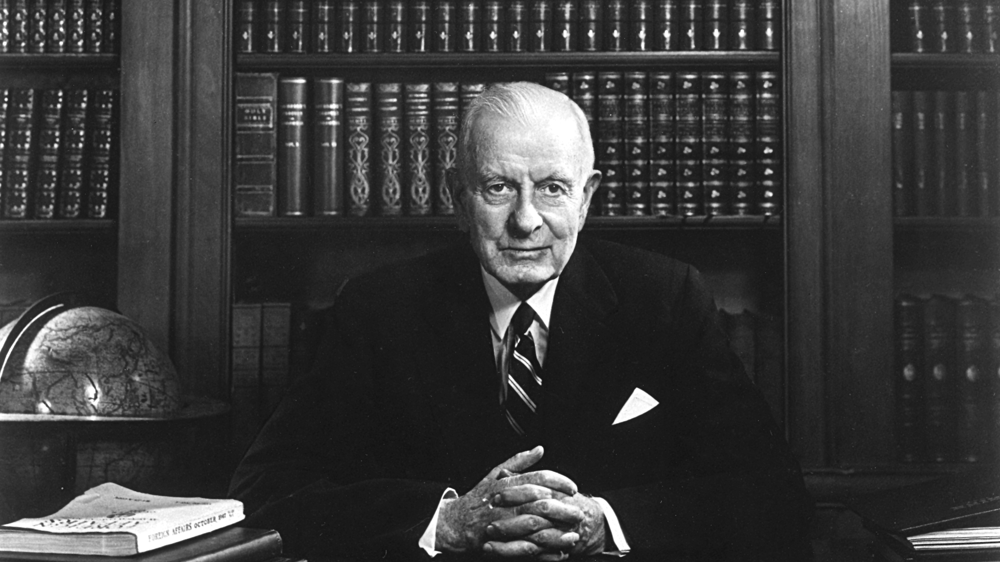
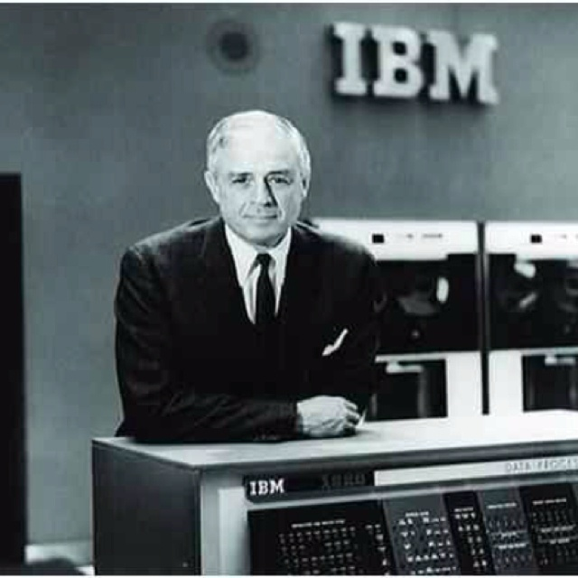

Thomas John Watson, Sr. served as the president of International Business Machines (IBM) from 1914 through 1956, guiding its development into a global power. Watson created IBM's unique management approach and corporate culture, as well as transforming the business into a very successful sales organization that was mostly centered around punched card tabulating devices. He was a prominent self-made manufacturer who died in 1956 and was hailed as the world's finest salesman. He was also one of the richest men of his day.
In 1955, Thomas Watson Sr. served as the chairman of the Elmira College Centennial Committee and donated Watson Hall, a structure largely used for music and mathematics instruction. In 1990, Mr. Watson Sr. was honored with a place in the Junior Achievement U.S. Business Hall of Fame.
 When he finished school his father had ambitions of him becoming a lawyer but he had other ideas - he would be a teacher. A single day of teaching cured him of this plan! So the next idea was to go into business. His father agreed as long as he went to business school. He completed the courses in accounting and business and immediately landed himself a job at $6 a week keeping the books of a butchers shop.
He studied the sales techniques but he was not good at selling. He watched the more experience salesmen's techniques while holding the horses and learned. The lsi of work he did and what he created and managed are given below:
| date | life event |
|---|---|
| February 17, 1874 | He was born in a scottish family |
| 1913 | He married to Jeanette Kittredge |
| 1914 | He took the challenge of managing CTR |
| 1915 | removed the threat of a jail sentence |
| 1924 | changed the name of CTR to IBM |
| 1956 | Died |